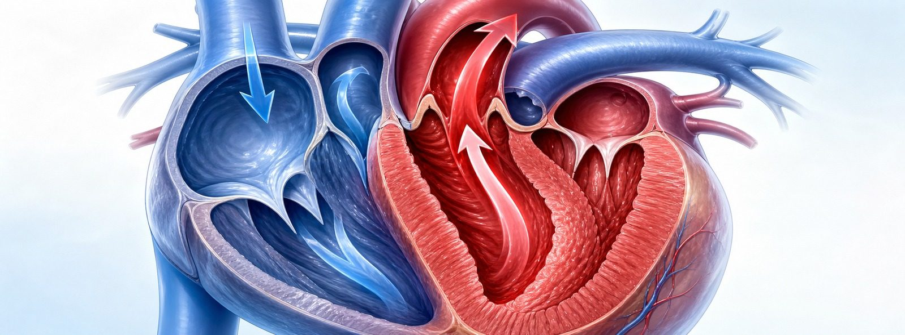
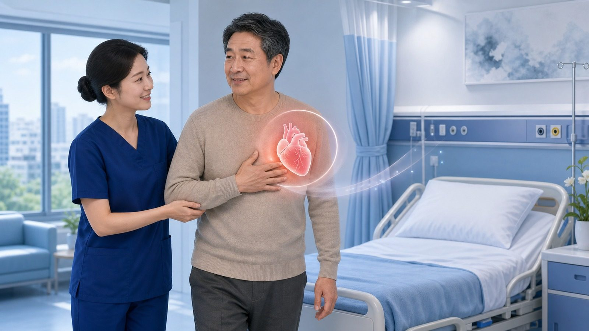
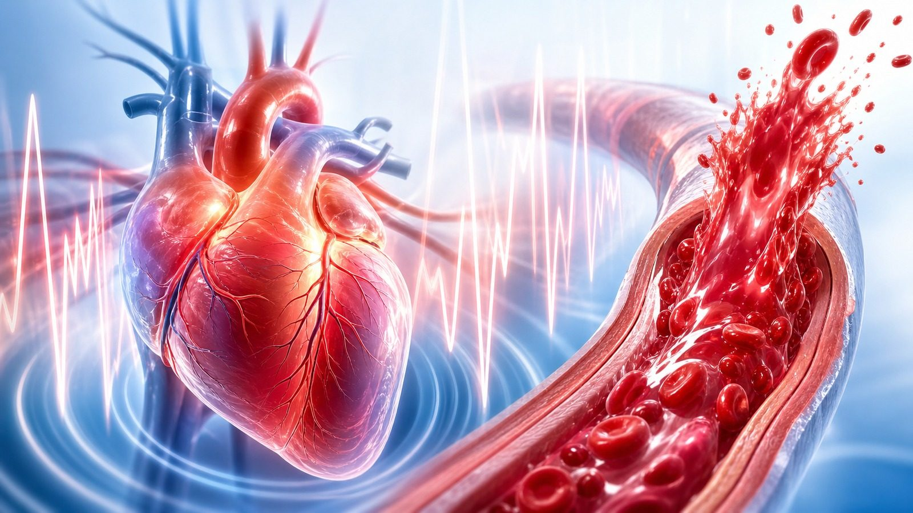

심근경색 후 베타차단제,
계속 먹을까 끊을까?
심장마비를 겪은 뒤 1년, 약을 계속 먹을지 끊을지를 비교한 ABYSS 연구를 환자 눈높이에서 알아봅니다
베타차단제는 왜 먹나요?
심장마비(심근경색) 후 오래전부터 써 온 대표적인 심장 보호약입니다
베타차단제는 심장을 천천히·부드럽게 뛰게 해서, 심장이 일하는 부담과 산소 소모를 줄여 줍니다.
심근경색을 겪은 심장은 한동안 약해져 있습니다. 베타차단제는 맥박과 혈압을 낮춰 심장을 쉬게 하고, 위험한 부정맥을 줄여 재발과 사망 위험을 낮추는 것으로 오랫동안 알려져 왔습니다. 그래서 많은 분이 심근경색 후 이 약을 처방받습니다.
그렇다면 평생 먹어야 할까요?
ABYSS 연구가 던진 질문 — 회복이 잘 된 분은 1년 뒤 끊어도 괜찮을까?
심장 기능이 잘 보존되고 1년간 별문제가 없었다면, 약을 줄이거나 끊어도 안전하지 않을까?라는 궁금증이 있었습니다.
치료가 좋아지면서 요즘은 심근경색 후에도 심장 펌프 기능이 잘 유지되는 분이 많습니다. 약을 줄이면 부작용(피로·어지럼 등)과 약값 부담도 줄겠지요. 그래서 프랑스 연구진이 이 질문에 직접 답하기 위해 ABYSS 연구를 진행했습니다.

두 그룹으로 나누어 비교했습니다
한쪽은 약을 끊고, 한쪽은 그대로 계속 — 약 3년간 결과를 지켜봤습니다
- 심근경색 약 1년 뒤 베타차단제를 끊음
- 다른 심장약(혈압약·콜레스테롤약 등)은 유지
- "끊어도 안전한지"를 확인하려는 그룹
- 혈압·맥박·증상을 정기적으로 점검
- 베타차단제를 평소대로 계속 복용
- 기존 표준 치료를 그대로 유지
- 비교의 기준이 되는 그룹
- 같은 방식으로 정기 점검
끊은 쪽이 더 좋지 않았습니다
사망·심근경색·뇌졸중·심혈관 입원을 합친 사건이 중단 그룹에서 더 많았습니다
끊으면 혈압·맥박이 올라갔습니다
ABYSS 2차분석 — 약을 끊은 그룹은 혈압과 맥박이 오르고, 삶의 질은 좋아지지 않았습니다
차이는 주로 '입원'에서 났습니다
사망·심근경색·뇌졸중은 두 그룹이 비슷했고, 심혈관 입원이 중단 그룹에서 더 많았습니다

그래서 내게 어떤 의미인가요?
"끊는 게 이득"이라는 근거는 없었습니다 — 하지만 결정은 사람마다 다릅니다
이 연구는 "스스로 끊는 것이 더 낫다는 근거는 없다"는 점을 보여 줍니다. 그러나 "모두가 평생 끊으면 안 된다"는 뜻은 아닙니다.
약을 계속 먹어야 할지, 줄여도 될지는 심장 기능, 혈압, 맥박, 부작용, 다른 질환 등 사람마다 사정이 다릅니다. 같은 검사 결과라도 누군가는 계속이, 누군가는 조정이 맞을 수 있습니다. 이 판단은 반드시 담당 의사와 함께 내려야 합니다.
절대 스스로 끊지 마세요
베타차단제를 갑자기 끊으면 오히려 위험할 수 있습니다 — 조정은 반드시 의사와 함께

진료 때 이렇게 상의하세요
궁금하거나 불편한 점이 있으면, 끊는 대신 다음을 물어보세요
- "제 심장 기능이면 이 약이 꼭 필요한가요?" 물어보기
- 피로·어지럼 등 불편한 증상을 솔직히 말하기
- 집에서 잰 혈압·맥박 기록을 가져오기
- 약을 빠뜨린 날이 있으면 의사에게 알리기
- 조정이 필요하면 의사 지시에 따라 서서히
- 인터넷·이 자료만 보고 스스로 끊기
- 몸이 괜찮다고 임의로 거르거나 줄이기
- 부작용이 있다고 말없이 복용 중단
- 남의 사례를 내 경우와 똑같이 적용하기
- 다음 진료까지 불편을 참고 방치하기
오늘 꼭 기억할 핵심 6가지
베타차단제, 끊을지는 나 혼자가 아니라 담당의와 함께 정합니다
약은 끊는 것이 아니라
함께 결정하는 것
베타차단제에 대해 궁금한 점은 언제든 진료 때 편하게 물어봐 주세요
광교중앙로 298, 4층
토요일 08:30~13:30
같은 자료를 다시 볼 수 있어요